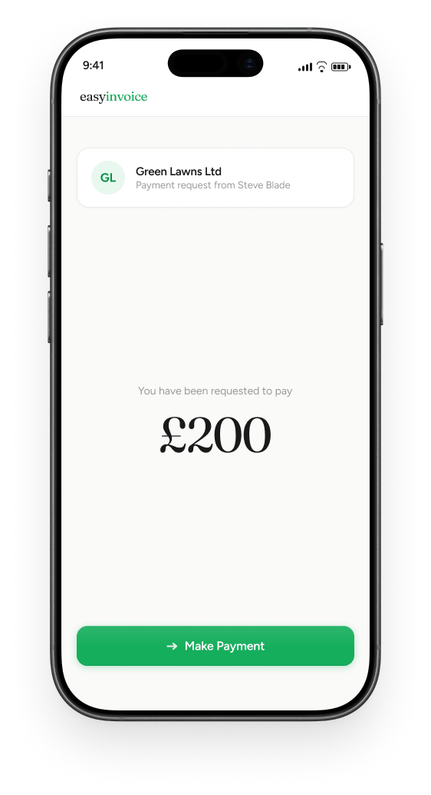
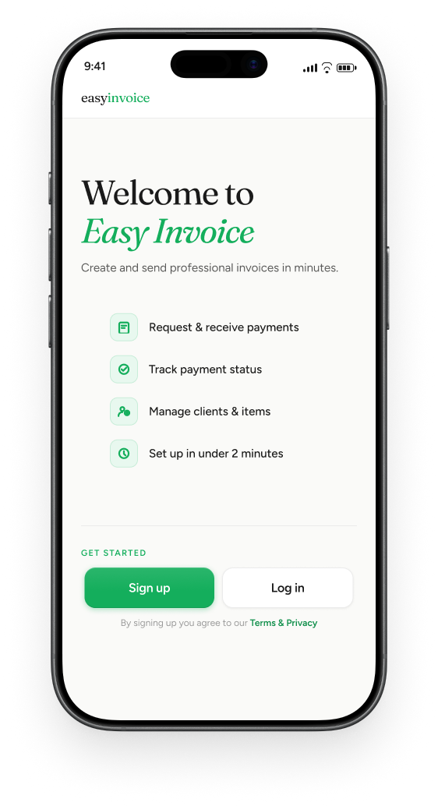
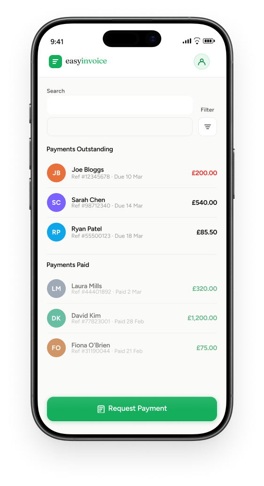
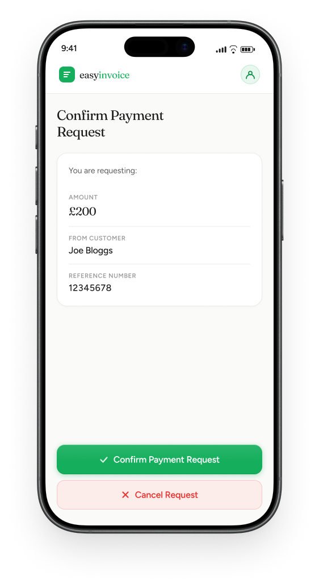

Easy Invoice
A frictionless invoicing app for freelancers and sole traders — built around how people actually work, not how accountants think they should.
- Role
- UX Designer
- Context
- Personal Project
- Focus
- Friction & Automation

- ✓Secure Payments
- ✓Simple Customer Flow
- ✓Clear Notification back to Payee
01 — The Problem
Spreadsheets, Paper, and the Awkward Money Chat
Running a freelance business or a small trade involves a lot of "I'll sort the invoicing later." Later arrives, and you're staring at a notebook, a few WhatsApp messages, and a vague memory of what you agreed with that client back in March.
The tools that exist tend to fall into two camps: massive accounting suites with more features than a small business will ever need, or a blank invoice template someone emailed you in 2019. Neither is designed for how people actually work — job to job, week to week, fitting invoicing in around everything else.
And then there's chasing. Nobody enjoys sending the third "just checking in" message to a client who owes them money. It feels awkward, a bit desperate, and it puts a weird tension on what was otherwise a good working relationship.
02 — The Solution
Zero Friction Tracking and the Automated Buffer
The idea came down to two things. First, reduce the friction of capturing work to almost zero — log a job when it happens, in seconds, and let the invoicing side sort itself out. Second, take the awkwardness out of chasing by making the reminders automatic.
Not "I'm chasing you" — "the system sent a reminder." That small psychological buffer turns an uncomfortable personal exchange into a neutral admin event. The relationship stays intact.



The three states map to the entire invoice lifecycle.
- —Jobs sit in "To Invoice" until you're ready to batch them and send.
- —Anything unpaid sits clearly in "Chasing", with the automated reminder badge so you can see at a glance what the client already knows.
- —"Paid" is exactly as satisfying as it should be.
03 — How I Got There
Testing with the Trio and Visual Reality Checks
I tested with three people — a freelance photographer, a self-employed plumber, and a graphic designer. The Trio, I started calling them. Different industries, same core frustration.
All three said the same thing early on: the job logging needed to be genuinely fast. If it took more than ten seconds, they'd do it later. And later, as we established, is where invoices go to die.
The other thing that came through clearly in testing was how much the visual design of "Paid" mattered. A small green dot and a status change didn't cut it. People wanted to feel it — a proper, obvious, you-got-paid moment. The big thumbs up came directly from one of those conversations: "Make it look like something good just happened."